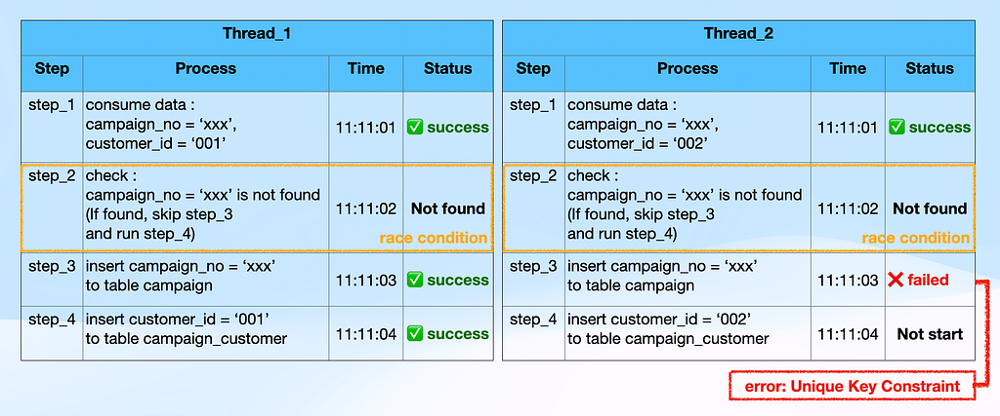

protect ‘race condition’
เรามาออกแบบระบบไม่ให้เกิด race condition ก่อนไปเจอบน production กันค่ะ
ช่วงปีที่ผ่านมา ทีมเราได้ประสบการณ์เรื่อง race condition มาบ้างค่ะ ด้วยปริมาณข้อมูลมหาศาลที่ระบบต้องรองรับ และบางอันเราก็ไปเจอระบบที่ได้ทำการออกแบบไม่ครอบคลุมในเรื่องของ race condition ค่ะ
race condition คือ อะไร
คำว่า ‘Race Condition’ มีต้นกำเนิดเกิดจากการศึกษาด้านวิศวกรรมไฟฟ้า ต่อมาได้ถูกนำมาใช้ในสาขาวิทยาการคอมพิวเตอร์ โดยเฉพาะในบริบทของการออกแบบระบบที่ทำงานพร้อมกัน (Concurrent Systems) หรือระบบเรียลไทม์ (Real-Time Systems)
race condition เกิดขึ้นได้อย่างไร
ขอจำลองเหตุการณ์นะคะ
เมื่อเราออกแบบให้ระบบมี worker 5 ตัว มาหยิบงานในคิวไปทำพร้อมกัน แต่งานต้องทำตามลำดับ 1–2 ไม่ได้เป็นงานที่มีอิสระต่อกันในแต่ละ worker เมื่อนั้นจะเกิด race condition ทำให้งานเดินต่อไปไม่ได้ค่ะ
ป้องกัน race condition อย่างไร
จากประสบการณ์ (ที่เราคิดว่าเป็นประโยชน์อยากแบ่งปัน) เราพบว่า เราป้องกันได้ด้วยการเสริมสร้างให้ทีมเข้าใจ 2 เรื่องค่ะ
1. การออกแบบ concurrent systems อย่างเข้าใจ
2. Load test อย่างเข้าใจ
เรามาขยายความกันค่ะ….
1. การออกแบบ concurrent systems อย่างเข้าใจ
การออกแบบ system/services ที่ทำงานพร้อมกัน คือ ระบบที่มีหลาย processes/threads ทำงานในเวลาเดียวกัน โดยอาจใช้ทรัพยากรเดียวกัน นั่นอาจทำให้เกิดความผิดพลาดในการจัดการได้โดยง่าย
ตัวอย่าง การทำงานของ service save_campaign โดย service ต้องจัดเก็บข้อมูล 2 table และ table campaign จะมี field “campaign_no” เป็น unique key ซึ่งเหตุการณ์นี้จะมี thread จำนวน 2 threads ทำงาน ณ จังหวะเวลาเดียวกัน ดังภาพด้านล่าง

จากตัวอย่าง thread_2 จะไม่สามารถทำงานไปถึง step_3 ได้ เพราะเจอ error จังหวะ save field campaign_no ที่ table campaign ติด unique key สิ่งนี้เราเรียกว่า race condition ค่ะ
ในมุมออกแบบระบบ เราสามารถป้องกัน race condition ได้หลาย solution ค่ะ ขึ้นอยู่กับปัจจัยต่างๆ ตอนที่เราออกแบบระบบนั้นๆ เลย
และจากตัวอย่างนี้ เราเลือกวิธีที่จะป้องกัน race condition ด้วยการเขียนคำสั่งเพิ่ม คือ หลังจากพบ error “insert campaign duplicate entry (MySQL error code 1062)” ใน step_3 ให้ระบบทำงานต่อไปที่ step_4 ได้เลยค่ะ
2. Load Test เพื่อให้เจอ race condition ก่อนขึ้น production
ในส่วนของ load test จังหวะนี้ทีมต้อง mockup data ให้ใกล้เคียงกับของที่เกิดขึ้นจริงบน production ค่ะ ไม่ mock เพียง 1 transaction เพียงเพื่อจะดูการรับ load เท่านั้น ไม่ว่า service ที่เรากำลัง implement จะซับซ้อนหรือไม่ก็ตาม เพราะเรากำลังทดสอบการทำงานของ service ที่ทำงานแบบ concurrent ซึ่งมี thread มากกว่า 1 thread ณ เวลาเดียวกัน
สรุปสั้นๆ กันค่ะ
>> race condition เกิดขึ้นเมื่อหลาย threads พยายามเข้าถึงทรัพยากรเดียวกัน โดยไม่มีการควบคุมที่ดี
>> การออกแบบ concurrent systems ที่เข้าใจ และมี synchronization mechanism จะช่วยลดปัญหานี้ได้
>> load test ที่เหมาะสมจะช่วยให้พบ race condition ที่หลุดรอดสายตาจากการออกแบบได้เป็นอย่างดี
หวังว่าทุกท่านจะสนุกกับการอ่านนะคะ ขอบคุณค่ะ
ขอขอบคุณ ผู้สนับสนุนการเขียนบทความนี้โดย
BA — Phakin Ardwatin
DevLead — Suphakrit Nakhabat
Reference :
https://en.wikipedia.org/wiki/Edsger_W._Dijkstra?utm_source=chatgpt.com